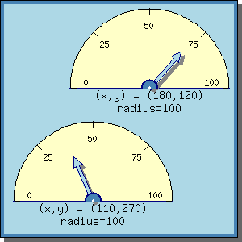

1 Introduction to odometer graphs
1.1 What are odometer graphs
1.2 Overview of Odometer capabilities
1.3 System requirements
1.3.1 Hardware requirements
1.3.2 Software requirements
1.4 Installation
1.4.1 Distribution forms
1.4.2 Installation Directories
1.4.3 Setting up paths
2 Creating an odometer graph
2.1 Creating a new graph and odometer
2.2 Creating your first Odometer
2.3 Working with the image cache
2.3.1 Specifying a cache file name
2.3.2 Specifying a timeout policy
3 Basic odometer formatting
3.1 Half and full odometers
3.2 Adding titles and captions to the graph
3.3 Changing colors
3.4 Changing indicator needle style
3.4.1 Adjusting needle length and weight
3.4.1 Adjusting arrow head for NEEDLE_STYLE_ENDARROW style
3.5 Adding shadows
3.6 Changing size and margins
3.7 Adding color indications
3.1 0 Using multiple indicator needles in one odometer
4 Working with scales
4.1 Specifying a scale
4.1.1 Min and max values
4.1.2 Tick and label positioning
4.1.3 Example using a different scale
4.2 Formatting scales
4.2.1 Fonts and colors
4.2.2 Formatting strings
4.2.3 Positioning labels
4.2.4 Tick size and color
4.2.5 A formatting example
5 Adding multiple odometers to the same image
5.1 Adding individual captions
5.2 Manually specifying positions for odometers
6 Advanced odometer formatting
7.2 TTF fonts
8 Reference section
8.1 Purpose
8.2 Class OdoGraph
8.3 Class OdoScale
8.4 Class Odometer
8.5 Class OdoNeedle
8.6 Class Text
8.7 Class OdometerLabel
8.8 Class LayoutVert
8.9 Class LayoutHor
Odometer graphs uses the methapore of an old fashioned speedmeter for cars. It is normally used to give a quick overview of one specific parameter. Experience have shown that this type of methapore is easily and quickly understood by most people. By adding color indications to the odoemeter it is very quick to see whether or not a specific value is within a allowed range or outside.
Before we go into details let's just for illustrative purpose show a
typical medium advanced Odometer graph and see what it looks like.
Figure 1: A medium complex example of a odometer. [src]
Odometers produced with this package have a wide range of functionality and as you would expect almost every bit of visual layout is in one way or the other customable. For simple use there are suitable default values for most parameters which will make creation of simple Odometer just a matter of a few lines of code.
Among other things Odometers support the following features:
No specific hardware requirements exist.
In order for JpOdoemeter to work you need the following additional software which is not included in the normal distribution of JpOdometer.
JpOdoemeter is distributed as a gun zipped tar file. The normal distribution includes
JpOdometer has no specific requirements to which directory it should be installed. This will be site dependent. In order to use JpOdometer the library should be installed in the search path for PHP scripts. This will ensure that user can access the library by using standard PHP include directive.
To unpack the distribution copy the zipped tar file to the directory where you want the library installed and type:
$> tar xfz jpodometer.tar.gz
Note:
If you want to install all TTF fonts in a separate directory then you
should move all *.ttf files to that directory. See also below about
setting up the correct TTF font path.
In the directory you should now have a minimum of three *.php files (may be more depending on if you choose to install just JpOdometer or the full JpGraph package).
Also verify that the directories ./examples, ./doc, ./src have been
created and that the files
jpgraph_odo.php
jpgraph.php
exists in the ./src directory.
Before using JpOdoemeter you must setup the required paths in
jpgraph.php this is necessary in order for JpOdometer
to know where to find TTF fonts and what cache directory to use.
| Name | Default | Description |
| CACHE_DIR | /tmp/jpgraph_cache/ | The directory which the cached images will be stored. Note that the Webserver/PHP must have write permission to this directory. |
| TTF_DIR | /usr/local/fonts/ttf/ | The path to where you installed the TTF fonts that accompanied JpOdometer. |
| APACHE_CACHE_DIR | /jpgraph_cache/ | At this point there is no need to setup this path. It is only documented here for completeness. This path is only used together with image maps which JpOdometer does not yet support. As of this writing only bar and pie graphs support image maps. |
This section has now been moved to the general JpGraph Manual.
This section assumes that you are familiar with basic style PHP scripting.
In order to use JpOdometer your script must include the relevant libraries, i.e. the top of your PHP file should have the following two lines
include( "jpgraph.php" );
include( "jpgraph_odo.php" );
The general process for creating an odometer graph is to first create a canvas where the odometer (or odometers) can be placed. This is done by creating an instance of the class OdoGraph() when creating this canvas you have number of options like the size of image and how the cache should be used.
After the canvas has been created you must create one of more odometers which are then added to the canvas. You can add as many odometers as you like to the canvas. In later chapter a complete descritpion on different ways on how to position odometers will be given.
After all the wanted odometers have been created and added to the canvas you then call the method Stroke() on the canvas which, when the script is run, will send the image back to the browser.
So, in general terms all your programs will have a the following layout:
... // Create a new canvas 300x200 pixels $canvas = new OdoGraph(300,200); // Adjust any parameters you like to change for the canvas // (Don't worry about if you don't understand the methods below, // they are just added as illustration)= $canvas->title->Set(.......) $canvas->caption->Set(...) // Create one of more Odometer $odo1 = new Odometer(); $odo2 = new Odometer(); ... // Adjust odometer parameters, colors etc $odo1->needle->Set(21); $odo2->needle->Set(47); ... // Specify the layout if you use multiple odometers $l = new LayoutVert( array($odo1, $odo2, ...) ); // Add the odometers with the proper layout to the canvas $canvas->Add( $l ); // If you only have a single odometer you may also write // $canvas->Add( $odo1 ); // Don't forget this call otherwise you wont see anything! $canvas->Stroke(); // Send back the image to the browser
To quickly get started lets create a very simply (but working) script that generates a very "bare-bone" odometer.
<?php
//=============================================================================
// File: ODO_TUTEX01.PHP
// Description: Example 0 for odometer graphs
// Created: 2002-02-22
// Author: Johan Persson (johanp@aditus.nu)
// Version: $Id$
//
// Comment:
// Example file for odometer graph. This examples demonstrates the simplest
// possible graph using all default values for colors, sizes etc.
//
// Copyright (C) 2002 Johan Persson. All rights reserved.
//=============================================================================
include ("../../src/jpgraph.php");
include ("../../src/jpgraph_odo.php");
//---------------------------------------------------------------------
// Create a new odometer graph (width=250, height=200 pixels)
//---------------------------------------------------------------------
$graph = new OdoGraph(250,140);
//---------------------------------------------------------------------
// Now we need to create an odometer to add to the graph.
// By default the scale will be 0 to 100
//---------------------------------------------------------------------
$odo = new Odometer();
//---------------------------------------------------------------------
// Set display value for the odometer
//---------------------------------------------------------------------
$odo->needle->Set(30);
//---------------------------------------------------------------------
// Add the odometer to the graph
//---------------------------------------------------------------------
$graph->Add($odo);
//---------------------------------------------------------------------
// ... and finally stroke and stream the image back to the browser
//---------------------------------------------------------------------
$graph->Stroke();
// EOF
?>
As you can see it only requires 5 lines of actual code to create a
simple but working script. The resulting image is shown
in Figure 2 below.
Figure 2: The simplest odometer using all default values [src]
The size of the Odometer is determined automtically to fit the given image size as good as possible. Since the size of the odometer automatically adjust itself to allow for any odometer caption, graph titels or graph captions there is rarely need to manually override this automation.
However it is still possible to manually specify the absolut size (of the radius) in pixels or as a a fraction of the image size.
If you need your odometer to have a specific radius given in pixels
you just have to call the SetSize() method in the
odometer specifying the desired size as the argument.
In the following chapters we will go through all the options you have to modify the size, shape and apperance of the graph.
Since generating images with PHP is a non-trivial exercise this will take some CPU time. A normal image can take between 0.1 and 0.3 s to create and also requires disk accesses. For a heavily loaded sites this can be a bottleneck.
To help with this situation JpOdometer uses a system which can cache recently generated images and instead of re-generate an image a search of the cache is first made and if the image is found in the cache then that image is used.
To use the cache feature you must
The cache file name is specified in the call that creates the graph canvas, For Odometers that is OdoGraph().
For example the following code sets the name to "mygraph"
You can also use the special value "auto" in which case the base filename of the script (with an added extension that indicates the image type, i.e. *.png, *.jpg). So again
$odograph = new OdoGraph(300,200,"auto");
Assuming the script is called "myscript01.php" and we a are using the PNG format the cache file name will be named "myscript01.png".
In the two calls in the previous section we were using the default value for the timeout policy wich happens to be never to timeout. This means that as long as the image file is in the cache this file will always be returned when the corresponding script are run.
To have a more usefull policy you may decide that it will be enough to make sure that the image returned to the browser is no longer than an hour old. You do this by specifying a 60min timout policy. This is accomplished by
$odograph = new Odograph(300,200,"auto",60);
Voila! Any call to the script within the next 60 min will not re-run the script but simply return the existing image in the cache. This will significantly reduce the load on the web-server.
The minimum timeout you can specify is 1 min and there is no upper limit.
In general odometer formatting is accomplished by either changing properties in the odometer, like the scale and title or by directly calling methods on the odometer.
Odometers comes in two fundamental shapes, full and half circle. The default if nothing else is specifed is to create a half circle. The type of odometer is specified in the createion of the odometer.
The type is controlled by the two constants
ODO_FULL Create a full circle odometer
ODO_HALF Create a half circle odometer
So to set the full style odometer you call
$odo = new Odometer(ODO_FULL);
and to set the half style you call
$odo = new Odometer(ODO_HALF);
or as this is the deafult just New Odometer()
The images below shows the full circle version of the simple odometer in section 2.2
Figure 3: A full circle version of the odometer in
section 2.2 [src]
Each graph can have a title, a subtitle and a caption. They are all properties of the graph. To specify a text striong for any of the properties you invoke the Set() method as in
$graph->title->Set("Result for 2002");
$graph->subtitle->Set("New York Office");
$graph->caption->Set("Figure 1.")
You can of course also modify font, color and size for these text strings by using the methods SetColor() and SetFont(). Lets change the title to be a little bit bigger and have white color.
$graph->title->SetColor("white");
$graph->title->SetFont(FF_FONT2,FS_BOLD);
adding these particular lines to the previous example would result in
an odometer image as
Figure 4: Adding titles and captions [src]
As you can see from the figure the margins will automtically adjust to hold the specified titles and captions.
It should be noted that the text strings specified can have multiple lines. You specify this by adding a '\n' in the text string where you want the line break (or splitting the line in the script). As an example, lets add a very long caption that we need to split up in three lines to fit. This is done by changing the caption line to
$graph->caption->Set( "Figure 1. This is a very, very long caption that we must split up in several lines to fit." );
Figure 5: Adding long captions [src]
The first thing to note is that all the colors you see you can adjust. For the canvas you can specify
SetMarginColor()
method for the graph and to specify the plot area color you use the
SetColor() method as in
...
// Make the border 40% darker than normal "khaki"
$graph->SetMarginColor("khaki:0.6");
$graph->SetColor("khaki");
Please see the reference section for how to adjust border line and shadow color. For the odometer itself you can adjust
SetColor() method on
the odometer. For example we could add the lines
...
$odo->SetColor("lightyellow");
$odo->scale->label->SetColor("blue");
$odo->needle->SetFillColor("yellow");
which adjusts, in turn, the fascia color, scale labels and the needle fill color.
As an example figure 6 belows shows a version of the previous odometer but in a
"mustard" color scheme.
Figure 6: Changing colors [src]
The indicator needle for the odometer can have six basic shapes which
is illustrated in the image below
Figure 7: Different style of indicator needle. The name
of the different styles are given under each odometer. [src]
To change the style you use the SetStyle() specifying the
desired needle style as the argument as in
$odo1->needle->SetStyle(NEEDLE_STYLE_SIMPLE);
The basic length of the needle is specified with the
SetLength() method of the needle. The needle size is
specified as fractions of the radius. So for example to have the
needle go halfway in the odometer you would add the code
$odo->needle->SetLength(0.5);
The default size for needles is 60% of the radius.
The other basic parameter for the needle is its weight. This is in a
similair manner specified with the method SetWeight()
Please note that the weight is always given in pixels.
For the needle style "NEEDLE_STYLE_ENDARROW" you can fine tune the shape and form of the ending arrow. This is done by specifying the particular end arrow size as the second parameter to SetStyle().
To simplify the arrow style setting you use a number of predefined sizes. When choosing an arrowhead you specify it's width and length each in three diffrent steps, small , medium and large.
The available end arrow styles are listed in the table below.
| Arrow name | Description |
| NEEDLE_ARROW_SS | Small width, small length |
| NEEDLE_ARROW_SM | Small width, medium length |
| NEEDLE_ARROW_SL | Small width, large length |
| NEEDLE_ARROW_MS | Medium width, small length |
| NEEDLE_ARROW_MM | Medium width, medium length |
| NEEDLE_ARROW_ML | Medium width, large length |
| NEEDLE_ARROW_LS | Large width, small length |
| NEEDLE_ARROW_LM | Large width, medium length |
| NEEDLE_ARROW_LL | Large width, large length |
So for example if you have a large odometer and woul like to use the largest arrowhead you would specify this as
... $odo->needle->SetStyle(NEEDLE_STYLE_ARROWHEAD, NEEDLE_ARROW_LL);
In the figure below you can see the usage of all the different
arrowheads
Figure 8: Changing size of the arrowheads [src]
You can add a drop-shadow to either the entire image or to the
needle. In both cases you use the method SetShadow() This
method also allows you to optionally specify the color of the shadow
as well of far it drops alogn the vertical and horiszontal axes.
To add a shadow to the graph you can use the code
... $graoh->SetShadow();
This will use the default color and default drop distance. To do the same thing for the needle you simply need to call
... $odo->needle->SetShadow();
Adding both types of shadow to our old favourite, the simple odometer,
gives the result shown in figure 9
Figure 9: Adding drop shadow to needle and graph. [src]
The size of the odometyer is automtically adjusted to fit the available space in the image after margins for titles and captions have been taken into account. This means that normally you should never have to manually specify a size.
If the need nevertheless should arrise you just need to make use of
the odometer method SetSize() as in
... $odo->SetSize(80);
The size should be specified in absolute pixels.
Each odometer also have a margin sorrounding it. This is the amount of
"space" around each individual odometer. The amount of space is
adjusted by the method SetMargin(). So for example if we
take the previous example that demonstrated the different types of
arrowheads and set the margins to, say 15 pixels, this would then
result in a modified image as shown below.
Figure 10: Increasing the margin around individual odometers. [src]
An odometer usually have some colored markings to indicate safe and
dangerous values. JpOdometer allows you to add as many different
ranges of the color of your choose as you like by using method
AddIndication()
To specify that you, for example, wants the area between 80 and 100 to be marked red you would call
... $odo->AddIndication(80,100,"red");
By using the AddIndication() multiple times you can add
several colored ranges. In figure 11 we have added two
colored band just as an illustration.
Figure 11: Using colors to indicate different ranges [src]
In the figure in section 3.7 you will notice that the colored band covers the whole fascia down to the bas eof the indicator needle. It is possible to specify that a circular area at the center of the odometer should not e colored by the indicator ranges. The size of this are is specified as fractions of the radius and the default size of this area is 0.
An example will make this clear. Specifyin a center area
is done by a call to SetCenterAreaWidth(). So, for
example to specify a center area which is 40% of the radius you would
call
... $odo->SetCenterAreaWidth(0.4);
This is illustrated in figure 12 below
Figure 12: Using a center area (compare this with figure 11) [src]
You can easily use multiple indicator needles in a single odometer, This could be usefull to show both a current value and, say, a six-month sliding average. You can use up to four indicator needles in a single odometer (which is probbaly more than you ever should use).
The extra needles are accessed by the properties needle2,
needle3, needle4 in hte odometer and work exactly as the normal
needle with one exception. You have to manually make them visible by a
call to Show(). It is only the promary needle
(needle) which is visible by default.
An example will make this clear. Let's take our old favourite the simple odometer and enable the second needle by adding the lines
... $odo->needle2->Show(); $odo->needle2->Set(44); ...
This will then give the image shown in figure 13below. (In this example we also changed the apperance of the second
needle to make it easier to tell them apart)
Figure 13: Enabling a second indicator needle [src]
Most types of odometers have a legend in the middle of the meter
usually indicating waht the scale shows. You can very easy add some
text to the middle of the odometer by setting the label
property of the odometer. As in
...
$odo->label->Set("% Pass");
Again, an example makes this clear
Figure 14: Adding a legend to the odometer. As you can
expect this legend text can be partially obscured by the needle
depending on the value the odometer shows. [src]
In the previous chapter you might have begun to get worried since we silently ignored the scale values which always seemd to be between 0 and 100 %. Don't worry. You may modify the scale to your hearts desire. We just used the default scale in all the previous examples to keep things as simple as possible (but not simpler...).
There are a number of properties for the scale you can change.
All these properties will be described in the following section. You
access the scale through the odometer property scale.
By default the scale runs between 0 (inclusivly) and 100 (inclusivly). If you try to set the needle to a value outside the scale you will receive an error message.
Min and max values are specified with the Set()
method as in
... $odo->scale->Set(0,240)
To specify the interval for the tick marks on the scale and which tick
marks should have it's scale value printed you use the
SetTicks() method.
The first argument specifies the tick interval, i.e. the interval tick marks will be drawn in the odometer. The second argument specifies that every n:th tick should have a label. So for example if you call teh methid with
... $odo->scale->SetTicks(20,2)
You would get tick marks on positions 0,20,40,60,.. up to the maximum value of the scale. Furtermore every second of these tick marks would have it's value printed so in the odometer the labels would be at 0,40,80, .. up to the maxiumum value of the scale.
To make sure that the maximum value gets a tick mark (if that is what you want) you should make sure that the tick interval you choose evenly divides the scale max value.
Let's say wee need a scale from 100 to 600 where we have tickmarks every 50 scale step and labels on the even hundreds (every second tick mark) we would then have to call
... $odo->scale->Set(100,600); $odo->scale->SetTicks(50,2);
This would then give an image as shown in 15 below.
Figure 15: Using a custom scale [src]
You can easily customize the apperance of the scale ticks and labels as described below.
To adjust the font and color of the text labels you access property
label in the scale and apply the standard
SetFont(), SetColor() methods. For example
...
$odo->scale->label->SetFont(FF_FONT1,FS_BOLD);
$odo->scale->label->SetColor("brown");
The way the labels are formatted are controlled by a format string with the standard "printf" syntax, e.g "%d" (as default) displays an integer and "%02f.1" displays a label zero padded to two positions and with one decimal place.
You can also easily add arbitrary character in the format string, just keep in mind that there is limited space available. For example to add a trailing "%" sign to the standard integer display you would specify a format string as "%d%%".
The format string is applied by using the
SetLabelFormat() method of the scale class as in
...
$odo->scale->SetLabelFormat("%d%%");
The center of the labels are positioned on an imaginary inner
circle. The size of this inner circle is by default 80% av the
radius. You can easily adjust this to better suit a bigger font by
calling the method SetLabelPos() as in
... $odo->scale->SetLabelPos(0.7);
You can adjust the tick marks weight, length and color by the
corresponding methods SetTickWeight(), SetTickLength(),
SetTickColor() in the scale. Pleas note that the tick length is
specified as a fraction of the radius while weight is specified in
pixels.
The following code excerpt illustrates how to do this
$odo->scale->SetTickLength(0.1); // Make tick 10% of radius
$odo->scale->SetTickWeight(2);
$odo->scale->SetTIckColor("brown");
You will note that tick that mark label positions (majot tick) are set to 1.5 times the length of the nominal tick length.
In the example in figure 16 below we have applied a
number of the modifications possible for scales as an illustration. We
wont discuss the changes in any more detail. The example code should
be fairly obvious.
Figure 16: Changing some scale properties [src]
This feature probably belong in the advanced section but is documented here for completeness.
For half odometers the scale goes from left to right and the first scale position is at 180 degrees (PI) and the end position is at 0 degrees.
If you dont like the scale going all the way to the bottom of the
odometer you can have, say 20 degrees, space. Before going into a
detailed discussion on how to do this let's just have a quick look at
the result to avoid any confusions on what er are discussing.
Figure 17: Adjusting the start and end angle. The left
odometer uses the default setting while in the right odometer we 'have
moved up' the start and end scale value by 20 degrees. [src]
The angles are specified by a call to SetAngle(). It is
important to note that the angle are counted clockwise from the 6'a
clock position. This means that the normal half odometer has a start
angle of 90 degrees and a finsh angle of 270 degrees.
In the example above ( Figure 17.) we modified the start angle to 110 and the end angle to 250 degrees to achieve the odometer on the right.
For full circle odometers the standard start angle is 40 degrees and the end angle is 320. This leaves a sector of 80 degrees free at the bottom of the odometer.
JpOdometer supports unlimited number of odometers in a single image. You can either position the odometers manually within the image by specifying absolute coordinates for the centers of the odometers or you can use the (preferred) automatic way.
When having multiple odometers in the same image you normally like to
have some kind of individual caption to describe each odometer. This
is easily accomplished by using the caption property of
the odometer. So to set the caption you could for example use
...
$odo->caption->Set("Average for July");
In the follwoing two sub section you cane see more examples of the usage of captions.
To manually set the position you have to use the SetPos()
method in the odometer class. You are free to specify any position you
like in the image. The (0,0) position is counted from the top left
corner.
As an example lets have two odometers, one upper right corner and one
in the lower left corner in an image that is 300 by 300 pixels big. We
also specify a slightly smaller size so they do not cover the entire
image width which otherwise would be the case.

Figure 18: Manually specifying size and position for
odometers. In additon we have also set a caption for each odometer
specifyin it x and y coordinates and it's size. [src]
Using absolute coordinates is not the only way. You may also specify the x position as fractions of the image width and the y coordinate as fraction of the image height. So for example specifying
$odo->SetPos(0.5, 200);
Will center the odometer horizontally while locking the y-coordinate to an absolute position at 200.
There is a small difference when using odometer captions and specifying the y coordinate using fractions in that the y-coordinate and the radius will automatically adjust to the height of the caption size. This gurantees that the total image (odometer+caption) will always occypy the same total height in the image regardless of the size of the caption.
What you normally want to do is not having to calculate the absolute x and y coordinates when positioning odometers. Instead most of the time you have an idea like "-I want to odometers side by side" or "I want three odometers above one another". Or maybe something more complex like "-I want two rows of odometers where the top row has two odometers side by side, and the bottom row has three odometyers side by side".
This is the user perspective and you normally want to do this without all the hassle of manually determine the coordinates. Luckily there is an easy way to accomplish this by using layout classes.
There are two types of layout horizontal and vertical. To specify that two odometers should be layed out side by side (horizontal) you creta a new layout object and add that layout object to the graph instead oif the individual odometers. So, two make a layout of three odometers side by side you would say somthing like
... $row1 = new LayoutHor( array($odo1, $odo2, $odo3) ); $graph->Add( $row1 );
If you instead wanted the three odometers stacked on top of eachother you would use a vertical layout class and write
... $col1 = new LayoutVert( array($odo1, $odo2, $odo3) ); $graph->Add( $col1 );
You can use as many odometers in the above array as you like. Each individual odometer will have its size and position automatically adjusted.
If you only could add odometers in the creation of layout classes it would be of limited use. The real power of layout classes is that the can be combined. So for exmaple if you wante two odometers in the top row and three in the bottom row you would write
... $row1 = new LayoutHor( array($odo1, $odo2) ); $row2 = new LayoutHor( array($odo3, $odo4, $odo5) ); // Combine the two rows in a column $col1 = new LayoutVert( array($row1, $row2) ); // The image will now have 5 odometers! $graph->Add( $col1 );
Using the above scheme will let you create arbitrary complex layouts
with as many columns and rows as you like. All this without ever
having to think of a single coordinate!
Figure 19: Using layout classes to position 5 odometers [src]
In the following image we have extended the previous example by adding
captions to each odoemeter and as you might have suspected the size
and position of each odometer has adjusted itself to compensate for
the caption line.
Figure 20: Using layout classes to position 5 odometers [src]
As a further example we can add both an image title and an image
caption as the following example shows (we have also made the image
slightly higher to avoid having the odometers becomming two small).
Figure 21: Adding an image title and caption [src]
The features described in the followinf section is probably not so much advanced as "rarley-needed-to-adjust".
The border with can be adjusted with a call to
SetBorder(). So for example to set a 5 pixels dark red
border you woudl write
$odo->SetBorder("darkred",5);
Using our old favourite this would then result in
Figure 22: Adjusting the width and color of the border [src]
Fonts for the various text strings used are always specified with a
call to SetFont().
The syntax for this call is
SetFont(.
For the builtin fonts the
Note that not all fonts support all styles. Refer to the tables below.
The size of builtin font can not be changed and the parameter is
ignored if supplied in the call to
The available fonts depends on what fonts you have installed the
following list assumed you have installed both the standard and extra
fonts that comes with JpOdoemeter.
The following section contains a reference of all public classes, methods and
properties which can be used to modify the apperance of Odometers.
None.
Creates a new canvas where odometer can be added.
Add a new drawing object to the canvas. A drawing object is an instance
of either
An added object can either be an array of object or a single
object. You may call
This method should normally be the last method called in your
script. If no filename is specified then the generated image will just
be sent back to the browser. If, however a filename is supplied then
the generated image will be written to that file. The filename is
relative to the directory where the script executes.
As a special case the filename may be specified as "auto" in which
case the image will be stored to a file withe the same basename as the
script.
Using a filename makes it possible to run JpOdometer in batchmode off
line to generate images directly to a directory.
Use this method to add a dropshadow to the image.
Sets the background color for the area where all the odometers are
plotted.
Sets the color of the margin of the image.
Specifies the angle for the minimum and maximum scale values. For
semi-circle odometer the minimum is by default at 90 degree (9'a
clock) and the end position at 270 degrees (3'a clock).
For a full circle odometer the defaults are 40 and 320 degrees
respectively.
The format string control how scale values are formatted when they are
printed on the odometer. The scale string should be formatted as a
standard "printf" format string.
Specifies the thickness of of each tick mark.
Specify the length of each tick mark as a fraction of the
radius. Major tickmarks (tick marks which have a label) is always 1.5
times as longer than the above specified length.
Specify the color of the tick marks
Specify the range for the scale. Any attempt to set the indicator
needle outside the sclae will result in an error.
Each labela center is positioned along a thought inner circle. The
method is used to spoecify the radius of this thought circle as a
fraction of the odometers radius. By default the "label radius" is at
80% of the odometer radius.
Depending on the font you use you may have to reduce the circle in
order to avoid the label from crossing the odometer border.
Tick marks will occur at every
The specified tick interval should be an even divider to (max scale
value) - (min scale value) if you want to make sure that both the
start and end scale value will receive a tick mark.
The examples below assumes a scale between 0 and 100
By default the scale is displayed. By setting the falg to false no
tick marks and no labels will be displayed.
None.
This is the main class to create odometers. Each created odometer must
be added to a graph canvas (via a call to OdoGraph::Add()) in order to
be displayed. Odometers can be of two basic types; full circle or half
circle.
Create a new odometer. The default is to create a half circle odometer.
Specifies the margin around an odometer. The default margin is 5
pixels. The margin feature is of most use when you haev multiple
odometers on the same image and don't wont them to be to close to
eachother.
This is probably the method you will use least. It is used to modify
the apperance of the "needle base", the small colored circle area at
the center of the odometer from which the indicator needle extends.
The default width is 12% of odometer radius.
This function comes in handy when using colored indicators to show
various scale ranges. Normall these colored ranges extends as
pie-slices all the way from the center to the edge of the odometer. If
you don't want the colored bands to reach all the way to the center of
the odometer you can use this method.
This comes in handy for example if you have an odometer legend in the
middle of the odometer.
The color of the center area is the same as the fascia color of the
odometer.
The default width is 0, i.e no center area.
Specifies the position of the center for the odometer on the graph
canvas. If the coordinate given is >= 0 and <1 then the position given
will be interpretaed as fraction of the image width/height. If the
position is given as a value >1 then the position is assumed to be
given in absoilute pixels.
For full circle odometer the default is to place the center of the
odometer in the center of the image. For half circle odometers the
default is to place the center at the bottom of the image to make full
use of the available size.
Specify the basic size of the odometer.
Us ethis method to add one or several colored band to the
odometer. This is usually to indicate "safe" or "dangerous"
values. The areas is specified with two scale values and the color
that indication should have.
Assume we have a scale between 0 and 100. We wont to mark the scale
between 0 and 50 as "green" and the value between 80 and 100 as "red".
Set the (fill) fascia color for the odometer.
Use this method to specify width and color od the border around the
odometer.
The default is a 1 pixel black border.
This is controllinf class fo the apperance of the indicator needle in
each odometer. This is accessed through the properties in the
odometer.
A needle can have one of seven basic different shapes. The shape used is
controlled by constants. The constants are
When using the arrow style you can further adjust the shape of the end
arrow as the following tabel shows
None.
Use this method to speciy what scale position the needle sould point to.
A value outside the current scale will give an error.
By default only the primary needle is shown in the odometer.
Specify the basic width (in pixels) of the needle. The default width
is 4 pixels.
Specify the width of the border around the needle. The default is 1
pixel
Specify the color for the line border around the needle. The default
color is black.
Specify the fill color for the needle. The default fill color is light
blue.
Specify the length of the indicator needle as fraction of odfometer
radius.
The default length is 60%
As described in the beginning of this class a needle can have seven
basic shapes. This method controls the shape of the needle.
The style specifi paramneters is currently only used for the arrow
style where the first style parameter specifies the type of arrow to
be used.
The
Adds a drop shadow to the needle.
This is the general text fromatting class used for all texts like
titles, captions, legends, scale labels etc.
You wil access these methods through the various instances in the
other classes.
None.
Sets the text string
See Section "7. Available fonts and styles"
for a full description on how to use fonts and available fonts.
Specifies text color for string
Specifies the paragraph alignemtn if the texte string consists of
several individual text rows. You make a text multi rowed by inserting
'\n' wher you want to make a line break.
By default text rows are centered under each other.
Available alignment options are
None.
None.
Defines a vertical layout of multiple odometers or Horizontal layout.
See "5.3 Using layout classes" for a
detailed description and examples.
None.
None.
Defines a horizontal layout of multiple odometers or Vertical layout.
See "5.3 Using layout classes" for a
detailed description and examples.
None.
7.1 Built-in fonts
SetFont().
FF_FONT0 is the smallest
font and FF_FONT2 is the largest of the builtin fonts.
Font family
Normal
Italic
Bold
Bold italic
FF_FONT0 X FF_FONT1 X X FF_FONT2 X X 7.2 TTF fonts
Font
family Normal Italic Bold
Bold italic FF_ARIAL X X X FF_BOOKANT X X X X FF_COMIC X X FF_COURIER X X X X FF_TAHOMA X X FF_TIMES X X X X FF_VERDANA X X X FF_HANDWRITING X 8 Reference section
8.1 Purpose
8.2 Class OdoGraph
Predefined Instances
Description
Properties
Class Image OdoGraph::img
Class Text OdoGraph::title
Class Text OdoGraph::subtitle
Class Text OdoGraph::caption
Methods
OdoGraph($aWidth=-1,$aHeight=-1,$aCacheFileName="",$aCacheTimeout=0)
$aWidthWidth of image in pixels $aHeightHeight of image in pixels $aCacheFileNameFilename used for image in cache $aCacheTimeoutTimeout for cache in minutes Examples
// Create a graph with default width and height, no caching
$graph = new OdoGraph();
// Create a 300x400 image, no cache
$graph = new OdoGraph(300,400);
// Create a 300x400 image, use the script name as name of the cached
// version, no timeout (cached image lives forever)
$graph = new OdoGraph(300,400,"auto");
// Create a 300x400 image, use the script name as name of the cached
// version, 5 minutes timeout
$graph = new OdoGraph(300,400,"auto",5);
// Create a 300x400 image, use "image1" as the cache file name,
// 5 minutes timeout
$graph = new OdoGraph(300,400,"image1",5);
Add($aObject)
$aObjectObject to add to the canvas
Add() several time for the same
graph.
Examples
// Adding a single odometer
$graph->Add($odometer1);
// Adding multiple odometers
$graph->Add( array($odometer1, $odometer2) );
// ... or
$graph->Add($odometer1);
$graph->Add($odometer2);
// Adding a layout object
$row = new LayoutHor( array($odometer1, $odometer2) )
$graph->Add($row);
Stroke($aStrokeFileName="")
$aStrokeFileNameOptional filename Examples
// Just send the image back to the browser
$graph->Stroke();
// Save the image to file "newimage001.png"
$graph->Stroke("newimage001.png");
SetShadow($aShow=true,$aWidth=5,$aColor=array(102,102,102))
$aShowShould the image have a drop shadow? $aWidthWidth in pixels of shadow $aColorColor of shadow Examples
// Enable the default shadow
$graph->SetShadow();
// Make the shadow 10 points in size
$graph->SetShadow(true,10);
SetColor($aColor)
$aColorPlotarea color Examples
$graph->SetMargin("snow1");
SetMarginColor($aColor)
$aColorMargin color Examples
$graph->SetMargin("snow2");
8.3 Class OdoScale
Predefined Instances
Odometer::scale
Descriptions
Properties
Class Text OdoScale::label
Methods
SetAngle($aStart,$aEnd)
$aStartStart angle in degrees $aEndEnd angle in degrees Examples
// 10 degrees "space" at both minimum and maximum scale
// value.
$odo->scale->SetAngle(100,260);
SetLabelFormat($aFormat)
$aFormatThe "printf" format sttring for
scale labels. Examples
// Format labels as decimal numbers padded with 0 to two positions and
// one decimal position.
$odo->scale->SetLabelFormat("%02.1f");
SetTickWeight($aWeight)
$aHeightTick weight in pixels Examples
$odo->scale->SetTickWeight(2);
SetTickLength($aLength)
$aLengthTick lengths as fraction of the radius Examples
$odo->scale->SetTickLength($aLength)
SetTickColor($aColor)
$aColorColor for ticks Examples
$odo->scale->SetTickColor("brown");
Set($aMin,$aMax)
$aMinMinimum scale value $aMaxMaximum scale value Examples
// Use scale values between 100 and 600 inclusivly
$odo->scale->Set(100,600);
SetLabelPos($aPos)
$aPosThe radius of the inner circle
along which all labels are positioned as a fraction of the odometers
radius. Examples
// Give some more space to labels than default.
$odo->scale->SetLabelPos(0.7);
SetTicks($aTickInt,$aLabelInt=1)
$aTickIntBasic scale interval to
positioning tick marks. $aLabelIntSpecify the intervall that
ticks should be labeled aTickInt scale
intervall. Of these tick marks every aLabelInt:nth tick
mark will be given a label.
Examples
// Tick mark every 10:th scale step
// Labels every 20:th scale step
$odo->scale->SetTicks(10,2);
// Tick mark every 25:th scale step
// Labels every 25:th scale step
$odo->scale->SetTicks(25,1);
// Tick mark every 25:th scale step
// Labels every 50:th scale step
$odo->scale->SetTicks(25,2);
Show($aShow=true)
$aShowFlag if scale should be visible or
not Examples
// Turn off scale
$odo->scale->Show(false);
8.4 Class Odometer
Predefined Instances
Descriptions
Properties
Class OdoScale Odometer::scale
Class OdoNeedle Odometer::needle
Class OdoNeedle Odometer::needle2
Class OdoNeedle Odometer::needle3
Class OdoNeedle Odometer::needle4
Class Text Odometer::label
Methods
Odometer($aStyle=ODO_HALF)
$aStyleCan be ODO_HALF or ODO_FULL Examples
// Create a new half circle odometer
$odo1 = new Odometer();
// Create a new full circle odometer
$odo2 = new Odometer(ODO_FULL);
SetMargin($aMargin)
$aMarginMargin in pixel around the odometer Examples
// Specify 10 pixels margin
$odo->SetMargin(10);
SetBase($aShowBase,$aWidth=0.1,$aColor1="navy",
$aColor2="steelblue",$aColor3="white")
$aShowBaseFlag to enable/disable the
needle base $aWidthWidth (as fraction of radius) of
needle base $aColor1Border color of base $aColor2Fill color of base $aColor3Center color of base Examples
// Make the base bigger and some new funky colors
$odo->SetBase(true,0.2,"brown","khaki","yellow");
SetCenterAreaWidth($aWidth)
$aWidthWidth of center area as fraction
of the radius Examples
$odo->SetCenterAreaWIdth(0.4);
SetPos($aX,$aY)
$aXX-position for center of odometer $aYY-position for center of odometer Examples
// Center the odometer in the image
$odo->SetPos(0.5,0.5);
SetSize($aRadius)
$aRadiusSize of radius in pixels Examples
// Set size 70 pixels
$odo->SetSize(70);
AddIndication($aStart,$aEnd,$aColor)
$aStartStart value $aEndEnd value $aColorColro for indication Examples
$odo->AddIndication(0,50,"green");
$odo->AddIndication(80,100,"red");
SetColor($aColor)
$aColorFascia color for odometer Examples
$odo->SetColor("lightyellow");
SetBorder($aColor,$aWidth=1)
$aColorColor for border around odometer $aWidthWidth of border around odometer Examples
$odo->SetBorder("blue",3);
8.5 Class OdoNeedle
Predefined Instances
Odometer::needle
Odometer::needle2
Odometer::needle3
Odometer::needle4
Descriptions
The image below gives a visual explanation to what these styles mean
NEEDLE_STYLE_SIMPLENEEDLE_STYLE_STRAIGHTNEEDLE_STYLE_ENDARROWNEEDLE_STYLE_SMALL_TRIANGLENEEDLE_STYLE_MEDIUM_TIANGLENEEDLE_STYLE_LARGE_TRIANGLENEEDLE_STYLE_HUGE_TRIANGLE
Figure 23: Different style of indicator needle. The name
of the different styles are given under each odometer. [src]
A visual explanation of the different arrow shapes are given below
Arrow name Description NEEDLE_ARROW_SS Small width, small length
NEEDLE_ARROW_SM Small width, medium length
NEEDLE_ARROW_SL Small width, large length
NEEDLE_ARROW_MS Medium width, small length
NEEDLE_ARROW_MM Medium width, medium length
NEEDLE_ARROW_ML Medium width, large length
NEEDLE_ARROW_LS Large width, small length
NEEDLE_ARROW_LM Large width, medium length
NEEDLE_ARROW_LL Large width, large length
Figure 24: Different shape of arrowheads [src]Properties
Methods
Set($aVal)
$aValSpecify the value for the indicator
needle in the odometer Examples
...
// Show to needle in the odometer
$odo->needle->Set(34);
$odo->needle2->Set(18);
$odo->needle2->Show();
SetWeight($aWeight)
$aWeightBasic width ofd needle Examples
$odo->needle->SetWeight(10);
SetLineWeight($aWeight)
$aWeightLine weight for the border of
the needle Examples
$odo->needle->SetWeight(3);
SetColor($aColor)
$aColorColor for needle fram Examples
$odo->needle->SetColor("navy");
SetFillColor($aColor)
$aColorThe fill color fo the needle Examples
$odo->needle->SetFillColor("red");
SetLength($aLength)
$aLenghtLenth of needle as fraction of
the odometer radius Examples
$odo->needle->SetLength(0.7);
SetStyle($aStyle, $aStyleParameter1=-1, $aStyleParameter2=-1)
$aStyleNeedle style $aStyleParameter1Style specific
parameter 1 $aStyleParameter2Style specific
parameter 2 $aStyleParameter2 is currently unused and reserved
for future use.
Examples
$odo->needle->SetStyle(NEEDLE_STYLE_STRAIGHT);
// Arrow with default arrow size
$odo->needle->SetStyle(NEEDLE_STYLE_ENDARROW);
// Arrow with a longer arrow
$odo->needle->SetStyle(NEEDLE_STYLE_ENDARROW,NEEDLE_ARROW_ML);
SetShadow($aShadow=true,$aColor="gray:0.7",$aDx=4,$aDy=4)
$aShadowFlag to enable/disable drop shadow $aColorColor of drop shadow $aDxShadow width $aDyShadow height Examples
// Add a default drop shadow
$odo->needle->SetShadow();
// Add a default drop shadow with "larger" drop
$odo->needle->SetShadow(true,"lightblue:0.6",8,8);
8.6 Class Text
Predefined Instances
OdoGraph::title
OdoGraph::subtitle
OdoGraph::caption
Odometer::caption
Odometer::label
OdoScale::label
Descriptions
Properties
Methods
Set($aTxt)
$aTxtSpecify a text string Examples
$odo->title->Set("Result for year 2002");
SetFont($aFontFamily,$aFontStyle=FS_NORMAL,$aFontSize=11)
$aFontFamilyFont family $aFontStyleFont style $aFontSizeFont size Examples
// Set the scale label font
$odo->scale->label->SetFont(FF_FONT1, FS_BOLD);
SetColor($aColor)
$aColorText color Examples
ParagraphAlign($aAlign)
$aAlignParagraph alignment for multi
line text string
Examples
$graph->caption->Set("Figure 1. Explaining the multi-line\nconcept in detail");
$graph->caption->PargraphAlign("left");
8.7 Class OdometerLabel EXTENDS Text
Predefined Instances
Odometer::label
Descriptions
Properties
Methods
SetVPos($aPos)
Examples
8.8 Class LayoutVert
Predefined Instances
Descriptions
Properties
Methods
8.9 Class LayoutHor
Predefined Instances
Descriptions
Properties
Methods